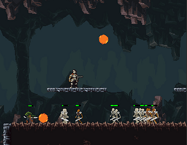
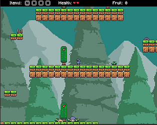
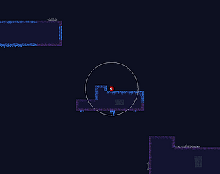

Games
Playable projects and prototypes.
Overrun
itch.io
A short, fun roguelike where you upgrade your gun to obliterate waves of enemies!
I think the time between upgrades takes too long, but it still ends up being fun. Stick it out to the third upgrade, they're super-upgrades, and a lot more fun to play with.

Grocery Run
itch.io
Your mom needs you to get some groceries. The nearest store is 10,000km away though...
A short fun platformer I made. I tried to make it more polished; it was meant to be a bigger project, but I stopped at 2 worlds.

Paulie's Ball
itch.io
Paulie dropped his ball down a huge cliff. He's really sad. Help him get it back.
Inspired by Faudian games like Jump King, this game has a simple mechanic but is endlessly frustrating. The first world is polished, but the rest is kind of unfinished. Give it a try if you'd like!
